J'ai encore plusieurs scènes comme celle-ci en tête, découvertes un peu trop tôt. C'est dans ces moments que ma cinéphilie a été nourrie, que j'ai développé un attrait pour le macabre et le gore. Je vous rassure : je ne suis pas devenu un psychopathe qui attend sa prochaine victime dans une ruelle sombre. Juste un fan de cinéma d'horreur qui se pose une question depuis toujours : « Mais comment ont-ils fait ? »
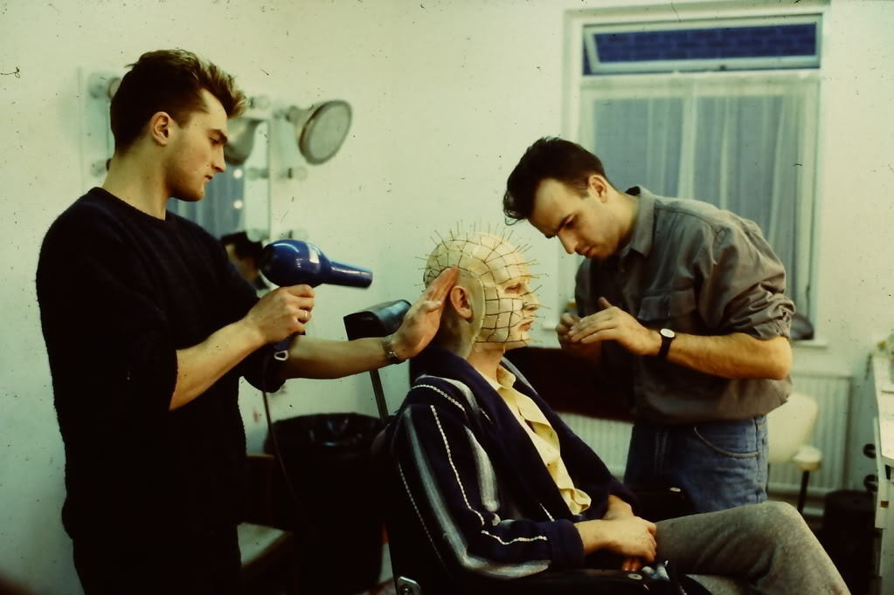
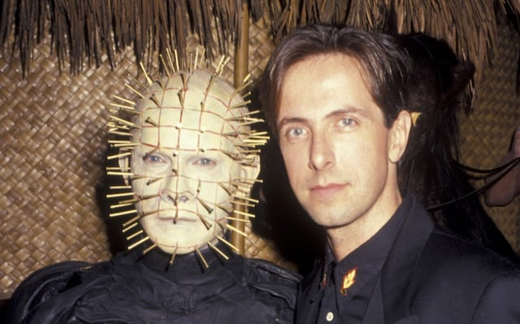
Avant d'être un réalisateur, Clive Barker est un écrivain. Au début des années 80, ses recueils Les Livres de sang le propulsent au rang des nouveaux maîtres de la littérature d'épouvante. Stephen King lui-même lui rendra hommage avec cette formule désormais célèbre : « J'ai vu le futur de l'horreur, et son nom est Clive Barker. » Une déclaration qui figurera sur toutes les bandes-annonces du film.
Deux premières adaptations de ses œuvres au cinéma — Transmutations et Rawhead Rex, signées George Pavlou — laissent Barker profondément frustré. Trop éloignées de sa vision, trop lisses, trop conventionnelles. La conclusion s'impose : si personne ne peut adapter Barker comme Barker le souhaite, c'est Barker lui-même qui devra le faire. Hellraiser, sorti en 1987, sera son premier long métrage en tant que réalisateur, adapté de sa propre novella The Hellbound Heart.
L'univers de Barker est d'une singularité radicale. Là où ses contemporains jouaient sur la peur primaire, sur le monstre tapi dans l'ombre, Barker convoque quelque chose de plus trouble : le désir comme vecteur de destruction. Les Cénobites ne sont pas des prédateurs ; ce sont des explorateurs de la chair, des philosophes de la douleur. Hellraiser plonge dans les recoins les plus sombres de la nature humaine avec une franchise qui désarçonne encore aujourd'hui.
À sa sortie en septembre 1987, Hellraiser divise la critique. La presse britannique le défend avec enthousiasme. Aux États-Unis, le ton est moins homogène. Roger Ebert, dans une critique restée célèbre pour sa sévérité, qualifie le film de production sans style ni raison. La censure, elle, ne s'y trompe pas : le film reçoit une note X pour ses séquences gores et sa scène de sexe entre Julia et Frank, obligeant Barker à effectuer des coupes.
Au box-office, le résultat est pourtant sans appel. Produit pour un million de dollars, le film en rapporte plus de vingt fois sa mise. Le public qui le découvre en salle sort troublé, fasciné, parfois choqué — mais il en parle. Et c'est dans le marché de la vidéo que Hellraiser va véritablement asseoir sa légende. Le film remporte le Prix spécial de la peur au Festival d'Avoriaz en 1988 et engendre sept suites, dont la qualité déclinante révèle a posteriori à quel point le premier opus tenait debout par la seule force de la vision de son auteur.
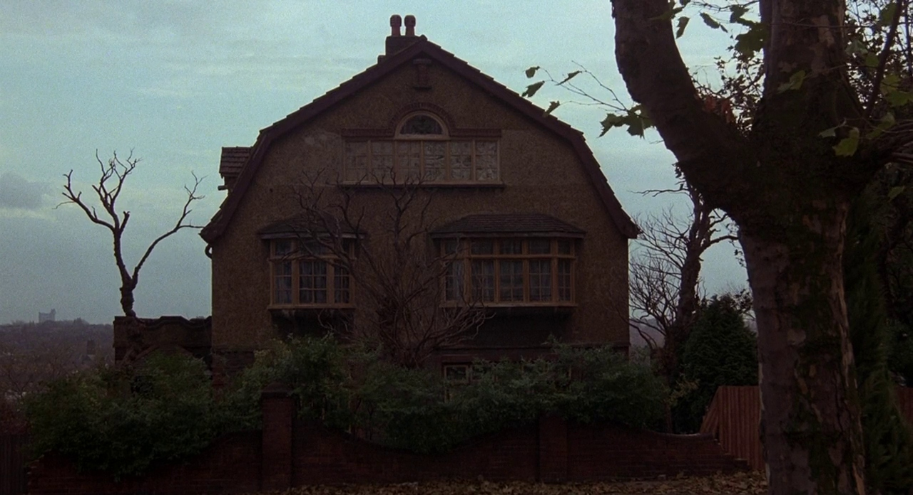
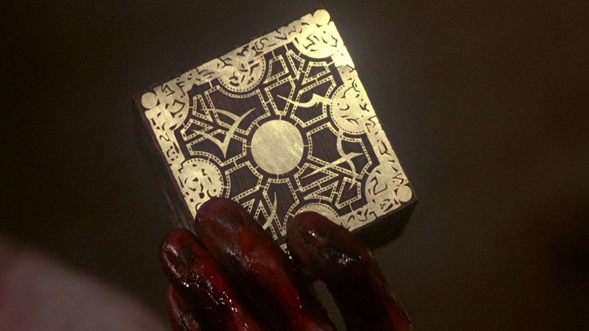
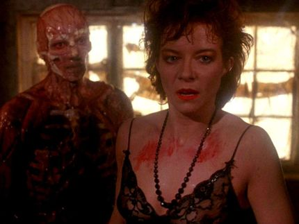
Descendez du wagon et écoutez. Écoutez cette douce mélodie onirique qui berce vos oreilles. Méfiez-vous.
Larry, mari aimant et légèrement naïf, emménage avec sa femme Julia dans l'ancienne maison de son frère Frank — disparu depuis, parti à travers le monde à la recherche de l'expérience la plus douloureuse et orgasmique qui soit. Julia, hantée par des visions de ce frère disparu, se languit d'une liaison passée avec lui. Un triangle amoureux pervers se dessine entre le mari, la femme et le fantôme de l'amant.
Pendant que Julia est perdue dans ses souvenirs, Larry s'ouvre la main sur un clou. Il saigne abondamment sur le sol du grenier — la pièce même où Frank avait jadis déverrouillé la boîte à puzzle occulte qui avait déchiré son âme et son corps. Quelque chose de dormant se réveille sous le plancher. Quelque chose de charnu, de têtu, et déterminé à revivre.
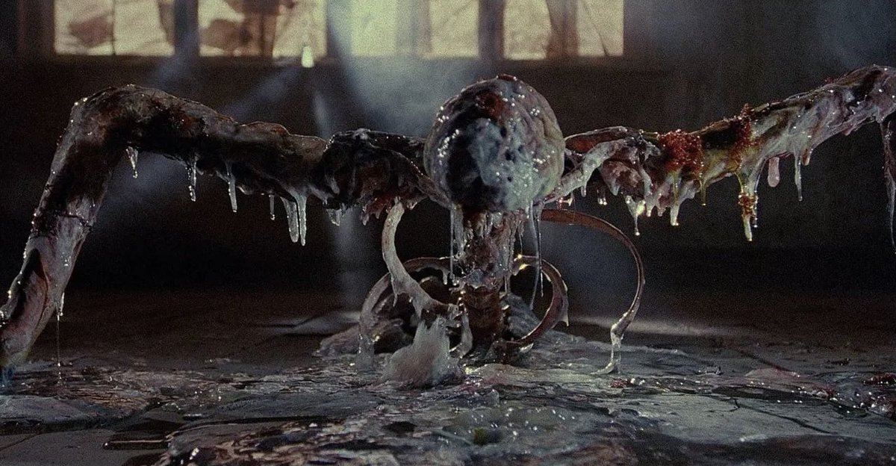
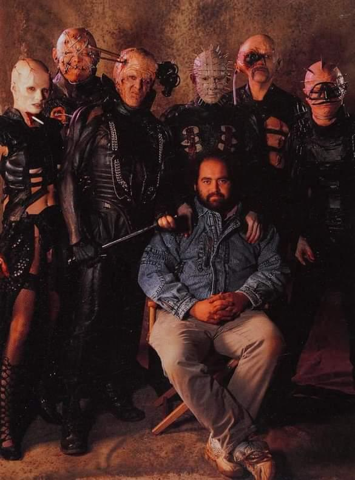
Bob Keen est un makeup artist et model maker de génie. À seulement vingt ans, il travaille déjà sur la première trilogie Star Wars, Superman, Alien et L'Histoire sans fin. Hellraiser sera le premier long métrage du tout nouveau studio d'effets spéciaux Image Animation, que Keen a cofondé avec le superviseur de l'atelier, Geoff Portass.
D'après les dires de Portass dans le documentaire Leviathan : The Story of Hellraiser & Hellraiser II Hellbound, la séquence de la naissance de Frank a été un pur casse-tête. Les producteurs voyaient dans le projet quelque chose d'impossible à réaliser. Après un visionnage au banc de montage, ils ont aimé ce qu'ils ont vu et ont donné le feu vert. Une bonne partie du budget a alors été injectée dans cette seule séquence.
Le montage original se déroulait ainsi : Larry s'ouvre la main. La caméra coupe. Julia retrouve Frank sans peau dans le grenier. Dans le scénario initial, Frank était éparpillé dans la pièce et sur les murs, censé commencer à parler avant de se matérialiser. Instinctivement, Keen sentait qu'il manquait quelque chose. Pas assez impressionnant. Pas assez viscéral. L'équipe a alors confectionné quelque chose de plus visqueux — un rêve d'ingéniosité : un cadavre vivant qui se reconstitue à partir du sol.
« J'ai trouvé intéressant de commencer par les os originels et de progresser vers quelque chose de rachitique mais définitivement vivant. Un renversement total par rapport à l'effet habituel où l'on faisait se décomposer quelqu'un. »
Bob Keen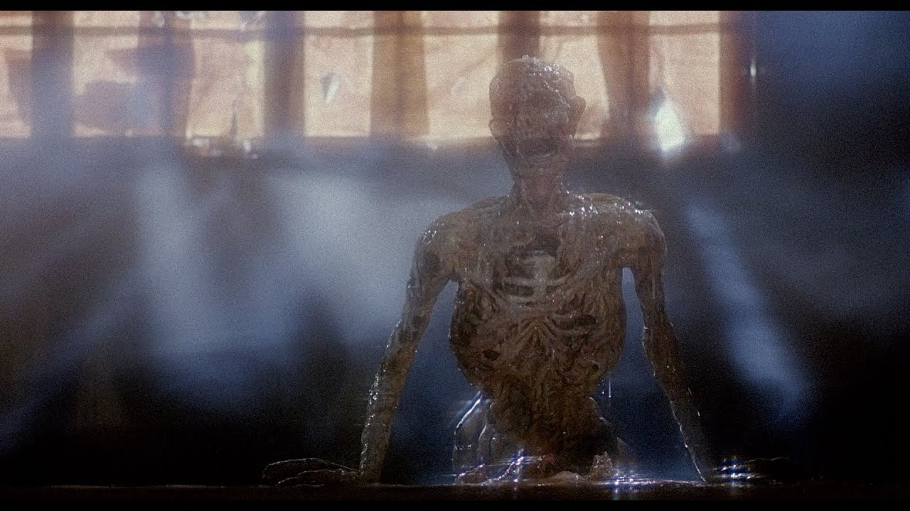
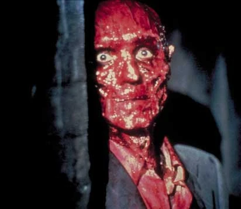
La séquence a été tournée dans un studio au sud de Londres après la fin du tournage principal — la seule scène du film réalisée en studio. L'équipe a travaillé sur un sol surélevé, ce qui permettait d'actionner marionnettes et pompes depuis le dessous du plancher.
Le plan du sang de Larry coulant à travers le sol est simplement inversé — un fluide rouge pompé à travers les clous visibles à l'écran. Les petits bras de Frank qui surgissent sont des animatroniques, fabriqués en grand nombre pour se rapprocher au maximum d'un résultat organique. L'effet de reconstitution de la chair a été obtenu avec de la cire et de la photographie inversée. Il suffit d'inverser la séquence pour que le spectateur assiste, ébahi, à cette naissance.
Le petit cœur embryonnaire visible sous le plancher a été fabriqué à partir d'un préservatif, d'un morceau de tube, de colle et de quelques pièces récupérées. Selon l'équipe, la base des effets spéciaux reposait sur l'utilisation de préservatifs et de lubrifiant — une ironie savoureuse pour un film hanté par la chair et le désir. On utilisait également de la méthylcellulose, un épaississant similaire à la maïzena, pompé en grandes quantités pour obtenir ces liquides visqueux si caractéristiques.
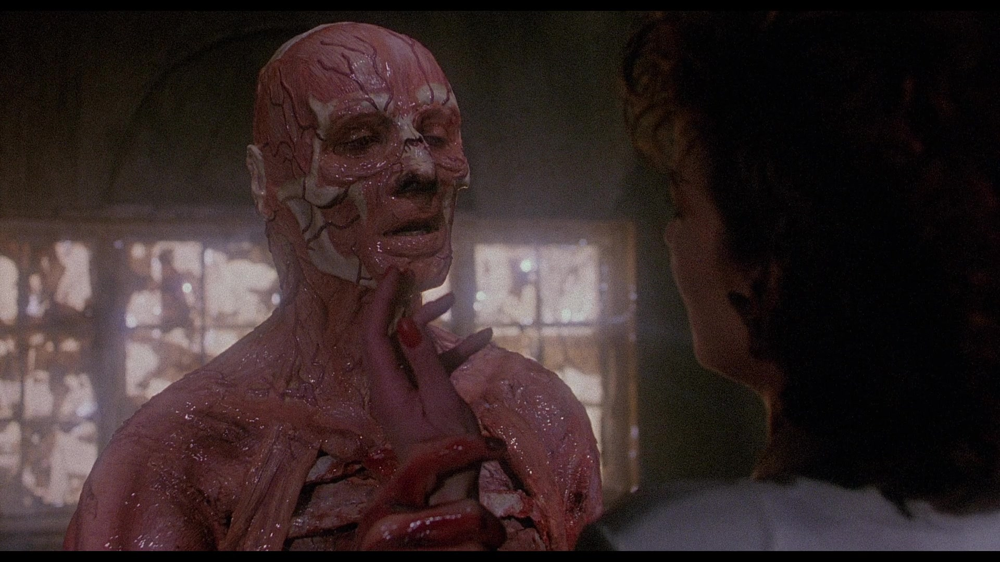
Si la séquence du grenier est le cœur battant d'Hellraiser, les Cénobites en sont l'âme. Barker les appelait ses "super-bouchers". Pour les concevoir, il puisa dans un mélange de sources : l'esthétique punk de la Londres des années 80, l'imagerie catholique, et les clubs sadomasochistes qu'il fréquentait à New York et à Amsterdam. Pour Pinhead en particulier, l'inspiration vient des sculptures fétiches africaines.
Le premier design envisagé pour Pinhead était radicalement différent. Il ressemblait à Shuna Sassi, personnage de son futur film Nightbreed — une silhouette hérissée de piquants. Quand Bob Keen a vu les croquis, la réponse a été immédiate : impossible à réaliser avec le budget. Un tel maquillage aurait nécessité six jours de travail par personnage. C'est de cette contrainte qu'est né le Pinhead que le monde connaît — cette grille géométrique de clous plantés dans un crâne rasé, d'une élégance presque liturgique.
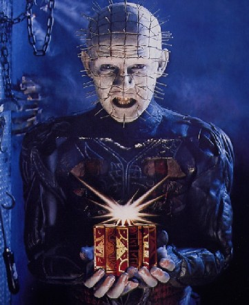
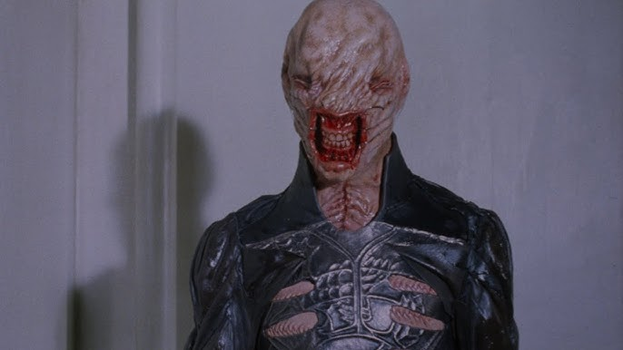
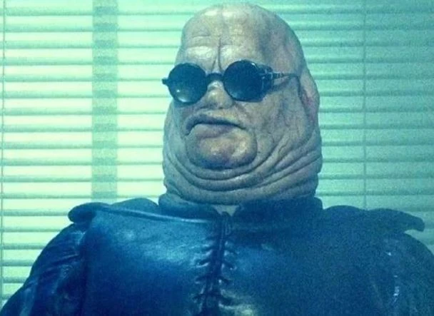
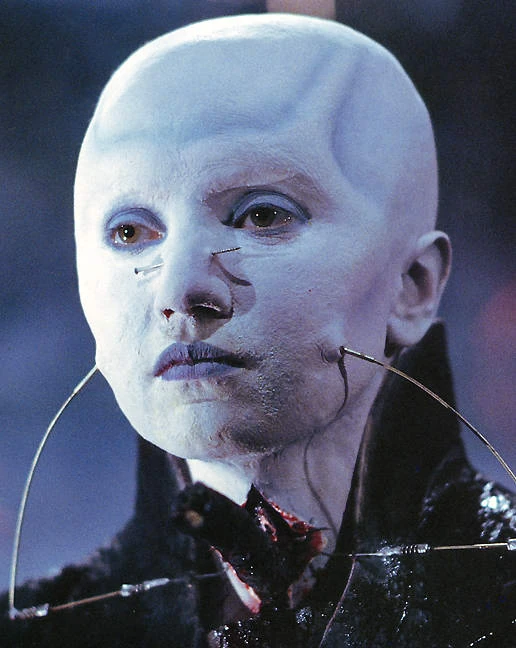
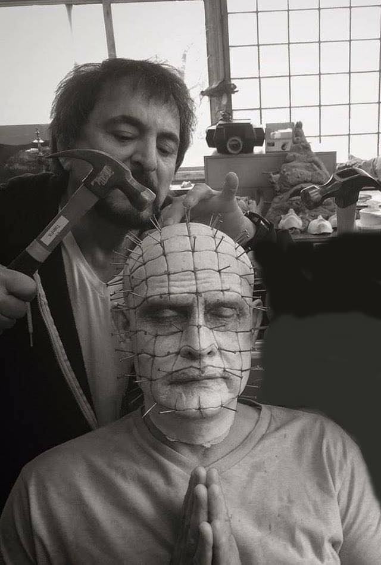
Doug Bradley s'est vu proposer deux rôles dans Hellraiser. Le premier : un déménageur de matelas, figurant. Le second : le Cénobite principal, entièrement recouvert de maquillage. Bradley a failli choisir le déménageur — au moins, dans ce rôle, le public verrait son visage. Il a finalement opté pour Pinhead, une décision qui allait définir toute sa carrière.
Le maquillage prenait cinq à six heures à appliquer lors des premières sessions. La première fois que Bradley s'est retrouvé face à lui-même dans le miroir avec le costume complet, il a passé un long moment à apprivoiser ce nouveau visage, à jouer ses répliques devant son reflet. C'est là, dit-il, que la plupart de ses décisions sur le personnage ont été prises.
« J'avais un sentiment de puissance, de majesté, d'une certaine beauté. Sa menace est implicite : regardez ce que je me suis fait à moi-même — imaginez maintenant ce que je peux vous faire. »
Doug BradleyBarker avait donné une indication précise : concevoir Pinhead comme un croisement entre un administrateur et un chirurgien qui dirige un hôpital où il n'y aurait que des salles d'opération. Cette vision d'un monstre bureaucrate, méthodique et éloquent, tranchait radicalement avec les codes du genre. Les producteurs suggéraient de lui faire cracher des blagues, comme Freddy. Barker a tenu bon. Et il avait raison.
Butterball est né d'une conversation simple : l'idée d'un personnage obèse qui jouerait constamment avec ses propres plaies. Chatterer — baptisé en interne "le pauvre bougre" — a été conçu autour d'un masque qui rendait son porteur totalement aveugle. Barker a insisté pour que chaque Cénobite soit joué par un véritable acteur. Le studio aurait préféré des figurants, moins coûteux. Barker a refusé, convaincu que même sous six heures de maquillage, les acteurs apporteraient quelque chose d'irremplaçable.
Butterball et Chatterer avaient des dialogues dans le scénario original. Mais une fois en costume, les deux acteurs étaient incapables d'articuler correctement. Leurs répliques ont été redistribuées — principalement à Pinhead, ce qui a contribué à faire de lui le personnage dominant du film. Par ailleurs, le surnom "Pinhead" n'apparaît nulle part dans le film original : au générique, le personnage est crédité comme "Lead Cenobite". C'est l'équipe maquillage qui a inventé ce surnom pendant le tournage. Barker a toujours détesté ce surnom, le jugeant indigne. Dans sa série de comics de 2011, il a restauré le nom original : Priest.
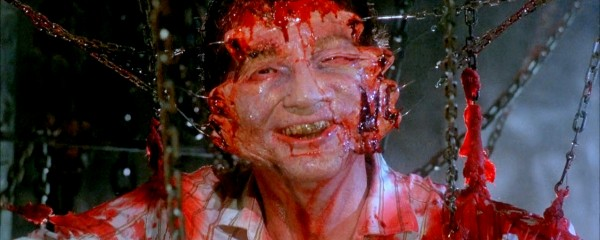
Voilà ce que c'est, au fond, que de faire du cinéma d'horreur artisanal. Des préservatifs, du lubrifiant, de la cire qui fond à l'envers, des acteurs aveuglés par leurs propres costumes qui poussent des bras en latex sous un faux plancher. Un budget d'un million de dollars, une équipe de passionnés, et une vision suffisamment forte pour que tout le reste s'efface.
Hellraiser n'a pas vieilli parce que ses effets spéciaux sont indestructibles — certains ont d'ailleurs mal vieilli, et Barker lui-même l'admet volontiers. Il n'a pas vieilli parce que son univers, lui, est inépuisable. La chair comme territoire de désir et de destruction, la douleur comme porte d'entrée vers une autre forme d'existence — ces idées-là ne se périment pas. Elles nous parlent encore parce qu'elles parlent de nous.
C'est ça, en définitive, la réponse à la question que je me posais enfant en descendant ces escaliers. Ce n'est pas une question de technique, même si la technique est fascinante. Comment ont-ils fait ? Ils ont cru en quelque chose. Et parfois, c'est suffisant pour créer une icône.